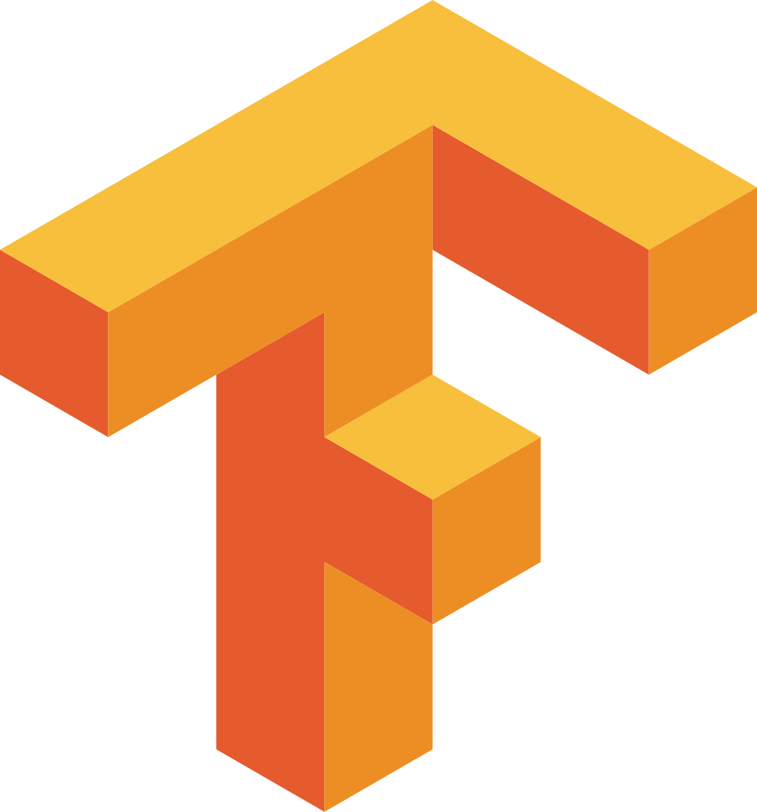

skills 0.97 Skills & Expertise
cv_dl 0.96
Computer Vision & Deep Learning
Object Detection (YOLO)
0.00
Image Classification (CNN)
0.00
OpenCV
0.00
TensorFlow / Keras
0.00
PyTorch
0.00
Ultralytics (YOLOv8)
0.00
mlops 0.90
MLOps & AI Infrastructure
Python
0.00
FastAPI
0.00
Docker
0.00
NVIDIA CUDA / TensorRT
0.00
Git & GitHub
0.00
data_ai 0.88
Data Science & AI Tools
NumPy / Pandas
0.00
Scikit-learn
0.00
LLM Integration (OpenAI)
0.00
React / React Native
0.00
SQL
0.00
Certificates
Technologies I Work With
 Python
Python

TensorFlow React
React
 JavaScript
JavaScript
 SQL
SQL
 n8n
n8n
 git
git
 GitHub
GitHub
 NumPy
NumPy
 Pandas
Pandas
 scikit-learn
scikit-learn
 Google Cloud
Google Cloud
 Firebase
Firebase
NVIDIA
OpenAI
OpenCV
Ultralytics